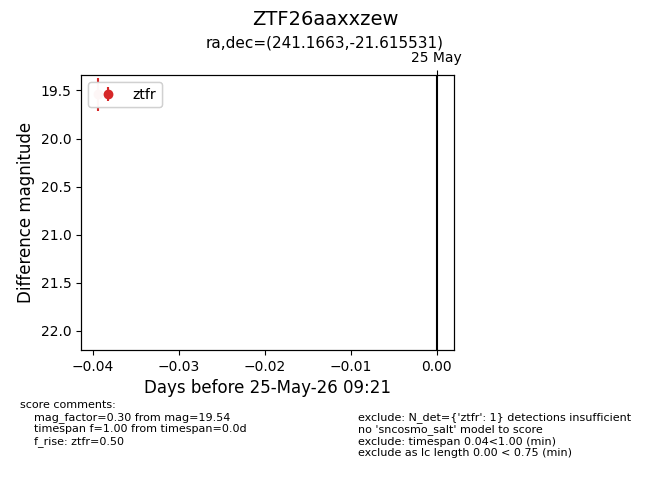
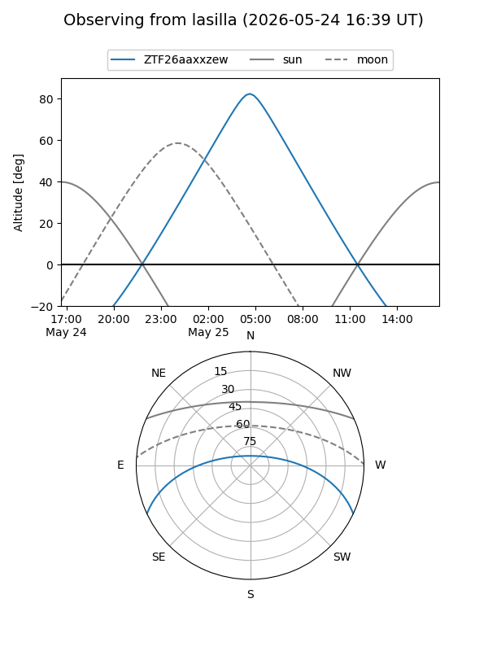
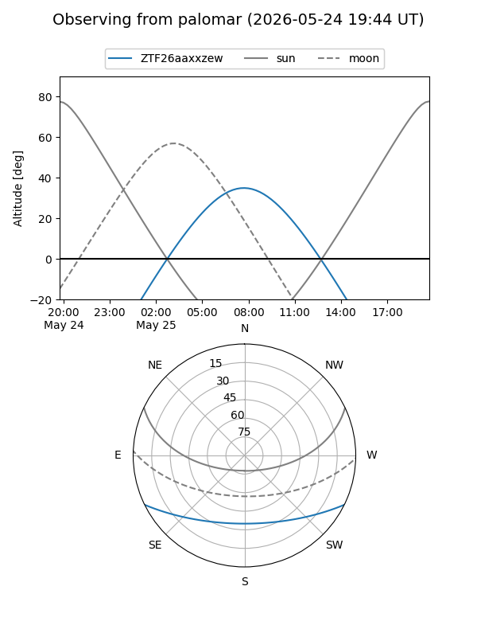

ZTF26aaxxzew
Target ZTF26aaxxzew at 2026-05-25 09:23
Aliases and brokers:
lsst-FINK: link
lsst-Lasair: link
lsst-ALeRCE: link
ztf-FINK: link
ztf-Lasair: link
ztf-ALeRCE: link
alt names
ZTF26aaxxzew (ztf,fink_ztf)
Coordinates:
equatorial (ra, dec) = 241.1663,-21.61553
equatorial (HMS+DMS) = 16:04:39.91,-21:36:55.91
galactic (l, b) = (351.6347,+22.48025)
Flags:
Photometry:
last ztfr=19.54
1 ztfr detections
Lightcurve

Visibility


Additional plots